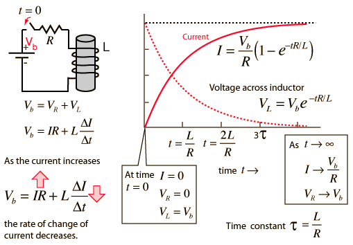

Inductor Transient
When a battery is connected to a series resistor and inductor, the inductor resists the change in current and the current therefore builds up slowly. Acting in accordance with Faraday's law and Lenz's law, the amount of impedance to the buildup of current is proportional to the rate of change of the current. That is, the faster you try to make it change, the more it resists. The current builds up toward the value it would have with the resistor alone because once the current is no longer changing, the inductor offers no impedance. The rate of this buildup is characterized by the time constant L/R . Establishing a current in an inductor stores energy in the magnetic field formed by the coils of the inductor.

|
Index
DC Circuits
Inductor Concepts |